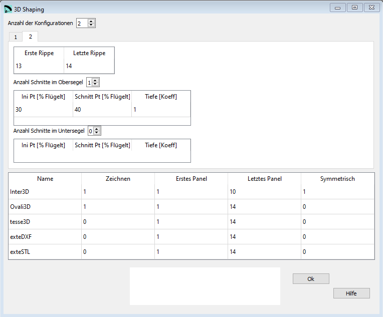

3D Shaping¶
3D Shapin in lep ist so umgesetzt dass nahe der Eintrittskante im Obersegel zwei und im Untersegel ein Bereich definiert werden können die “aufgeschnitten” und angepasst werden können.
Durch Veränderungen in der Länge der einzelnen Teile kann die Segelspannung und Form in der Längsrichtung angepasst werden.
Veränderungen Quer zum Flügel können mit der Veränderung der Parameter für die Tuchspannung erreicht werden.
{kind=link}
Rohdaten:
1
1
groups 2
group 1 1 12
upper 2 1
1 25 33 1.0
2 33 44 1.0
lower 0 1
group 2 13 14
upper 1 1
1 30 40 1.0
lower 0 1
* Print parameters
Inter3D 1 1 10 1
Ovali3D 1 1 14 0
tesse3D 0 1 14 0
exteDXF 0 1 14 0
exteSTL 0 1 14 0
Anzahl der Konfigurationen¶
3D Shaping ist eine optionale Konfiguration.
Wenn Du diese Funktion nicht verwenden willst, dann setzte den Wert für Anzahl der Konfigurationen auf 0.
Erste und letzte Rippe¶
Es ist möglich mehrere Gruppen mit verschiedenen 3D Shaping Parametern zu definieren. Mit diesen beiden Parametern bestimmst Du in welchem Flügelbereich die Parameter angewendet werden.

Anzahl Schnitte im Obersegel¶
Es können im Obersegel maximal zwei Schnitte definiert werden. Die Anzahl und Position der Schnitte beeinflussen die definitive Flügelform.
Ini Pt¶
Das Flügelprofil ist definiert durch eine Anzahl Koordinatenpaare in x und y Richtung. Die Positionen von Ini und Schnitt Pt werden definiert durch die Nummer eines der Koordinatenpaare.
Um die Nummer zu ermitteln musst Du entweder die Profildatei in einem CAD System oder einem Texteditor öffnen. Dann zählst Du ausgehend von der Flügelhinterkante, entlang des Obersegels die Punkte bis Du an der richtigen Profilposition angekommen bist.
Schnitt Pt¶
Die Position des Schnitt Pt wird analog der Position des Ini Pt definiert.
Tiefe¶
Mit diesem Parameter definierts Du wie viel Stoff in der Längsrichtung hinzugefügt wird. Der Koeffizient hat einen Bereich von -1.0 bis +1.0. Wenn Du 0.0 eingibst findet keine Längenveränderung statt.
Die Längenveränderung passiert wie folgt: an der Kante des Panels wird die Originallänge beibehalten. Basierend auf dem Tiefenkoeffizient wird die Panellänge in der Mitte entsprechend verlängert oder verkürzt. Die beiden Eckpunkte sowie der (verlängerte) Punkt in der Mitte werden mit einem Kreissegment verbunden.
Number of cuts in the lower sail¶
Im Untersegel kann maximal ein Bereich mit 3D Shaping definiert werden.
Die Definition von Ini Pt, Schnitt Pt und Tiefe erfolgt analog dem Obersegel.
Im folgenden Abschnitt wird definiert wie die 3D Shaping Daten ausgegeben werden sollen.
Name¶
Die Namen sind fix definiert und dürfen nicht verändert werden!
Inter3D: Darstellung der Zwischenpanels in 3D lep-3d.dxf
Ovali3D: Darstellung der ovalisierten Zwischenpanels in 3D lep-3d.dxf
tesse3D: Darstellung der Panel Runding in 3D lep-3d.dxf
exteDXF: Darstellung der Panel Rundung in 3D in einer neuen, separaten DXF Datei. (Möglichkeit zur Nutzung für Strömungsanalysen)
exteSTL: Darstellund der Panel Rundung in 3D in einer neuen, separaten STL Datei. (Darstellung in einem 3D CAD wie OpenSCAD oder FreeCAD)
Bemerkung: Nur die erste Zeile ist in lep vollständig implementiert. An der Berechnung der Daten für die weiteren Zeilen wird aktuell noch gearbeitet, trotzdem müssen sie hier schon definiert werden.
Für jede Zeile können folgende Werte definiert werden.
Erstes Panel¶
Nummer des ersten Panels für welches die Daten gezeichnet werden sollen.
Letztes Panel¶
Nummer des letzten Panels für welches die Daten gezeichnet werden sollen.
Symmetrisch¶
0: die Panels werden symmetrisch gezeichnet
1: die Panels werden nur einseitig gezeichnet
Eine detaillierte Beschreibung in englisch findest Du auf der Laboratori d'envol website.